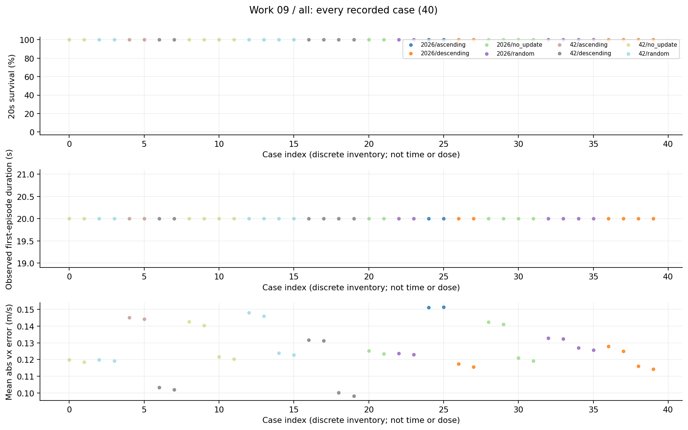
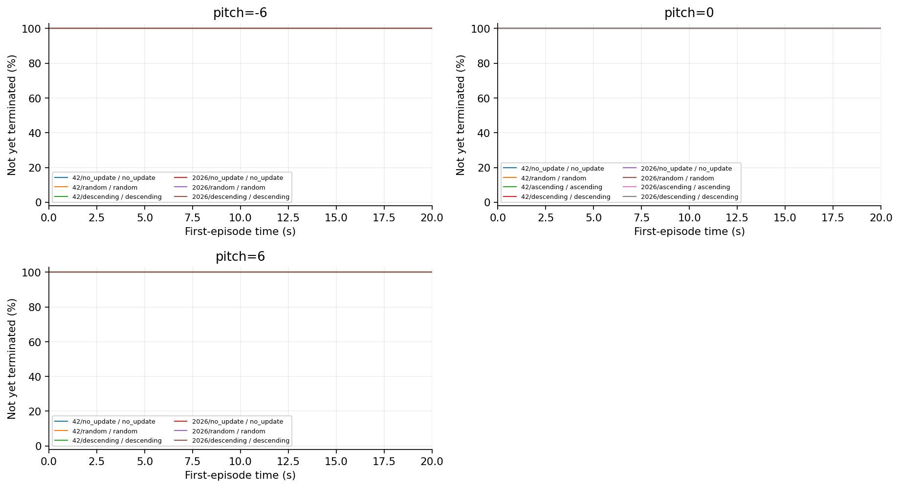
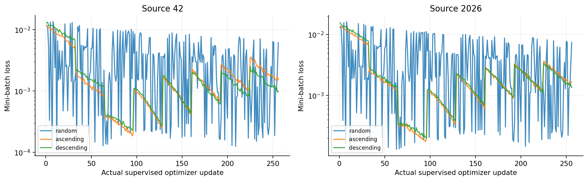
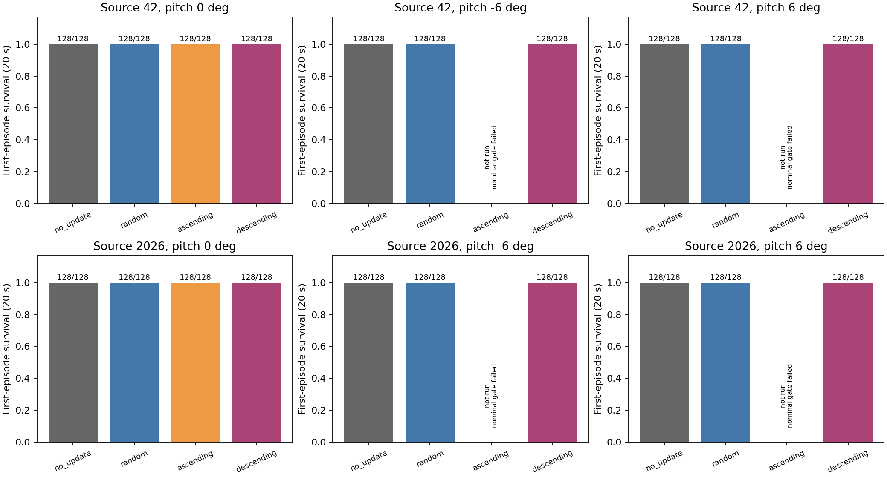
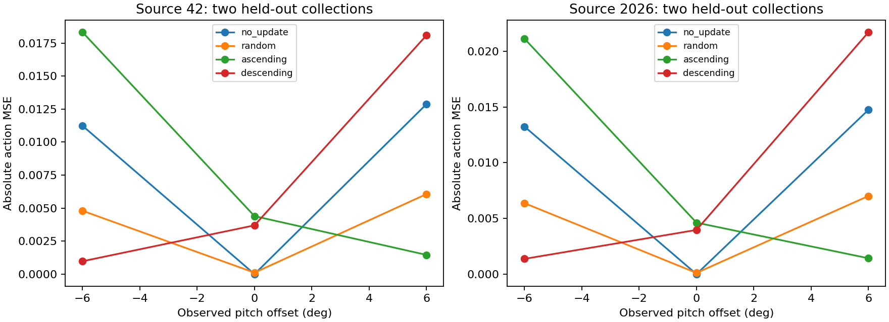

09 完整actor监督顺序研究报告
相同数据multiset的顺序会改变完整actor监督更新后的正常跟踪，但当前结果没有表现为满足正常门槛的故障失败。两个ascending分支先发生正常性能回归，故障条件未测。
整理日期 2026年10月15日 本轮仅分析已有数据 不新增实验
工作范围
42/2026来源、四种顺序分支，40个已执行case、2560首回合；故障测试受正常性能门槛控制。
我们如何完成这项工作
使用原PPO actor宽度、原normalizer冻结、teacher干净动作标签；random、ascending、descending各256次LR1e-5监督更新，另no_update。它不是完整奖励—优势—actor/critic的原生PPO。
现有结果及解释
1. 八个正常分支均128/128存活；42的no_update/random/ascending/descending vx误差为0.119104/0.119521/0.144713/0.102592m/s；2026约0.124315/0.123335/0.151270/0.116474。
2. 两个ascending未通过正常性能门槛，±6°故障case没有执行；其余六分支的已测旋转条件均存活。报告和浏览器将未测标为未测，不填0。
3. 监督小批次loss随排序变化，但末批角度、优化路径与普通遗忘也在变化。现有设计不能把顺序效应唯一解释为隐蔽污染。
完整结果表
阶段、条件和命令分别保留。未记录的指标显示未记录，不按0填充。表内百分比为存活，不是任务成功率。
查看本工作全部20个汇总单元
图表及读图注释
读图注释 no_update在本阶段真正是零更新。四分支共用样本，不代表每个分支独立采集一套数据。
读图注释 正常门槛既包括存活也包括连续跟踪指标，所以“存活全满”仍可能没有资格继续故障测试。
英文坐标速查：survival 是规定时长存活，不是任务完成率；duration / seconds 是首回合有效寿命；vx 是前向速度，XY 是平面速度；yaw 是绕竖直轴旋转；MSE 是动作拟合平方误差；pp 是百分点，例如90%到80%为下降10个百分点。完整解释见读图指南。
图1 全部任务点 all

每个点是一项真实任务；横轴仅是文件记录顺序，不是连续变量，故不连线。点保留评估seed差异。条件、模型和分母可在全数据浏览器按编号查询；早停时误差只覆盖终止前。图2 首回合存续曲线 第1组

横轴为首回合仿真秒，纵轴为尚未因任何原因终止的比例；20秒超时保留在终点，不画成死亡。由已保存终止时间重算，在0.1秒网格显示；不是完整姿态轨迹，也不把跨评估seed回合当独立训练。相同曲线可能重合。图3 监督更新过程的原始小批次loss

每条线为真实记录的监督更新，不是PPO回报。排序会改变每批样本难度，loss不可直接当全数据收敛或闭环安全。无更新分支没有loss，不补零。图4 closed loop survival

保留原实验图，不改变其样本、区间或协议定义。原图英文标注见本报告名词注释；探索、确认与历史快照不可混合累计。图5 offline mse

保留原实验图，不改变其样本、区间或协议定义。原图英文标注见本报告名词注释；探索、确认与历史快照不可混合累计。限制与不能支持的结论
两个来源、每来源一个训练采集、一个random日程和两个评估seed，没有独立优化seed重复。未测格不能用于计算总体故障成功率。
证据入口与复核范围
逐文件SHA及原始路径见输入清单；本轮复算范围见数据审计。下列输入在生成后再次核对未改。
D:\MicroDuckResearch\ti\outputs\microduck_reproduction\mechanism_audit\full_width_order_pilot\results.json
SHA256 fba32b0d9c3da3770e8883b6b6e4dc4c5ce3e7c3a4c1e04728f207f27d9bab1f
这项工作的价值
价值是验证完整策略容量下训练顺序确实影响行为，同时用正常性能门槛阻止把普通性能劣化包装成隐蔽攻击；它给下一份共同clean恢复反证提供真实父分支。